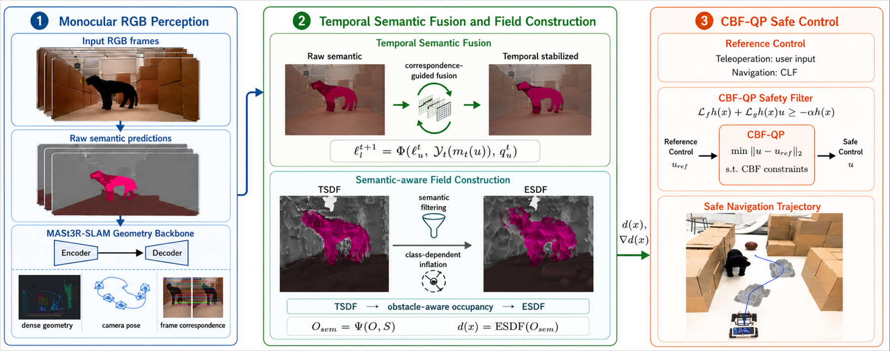
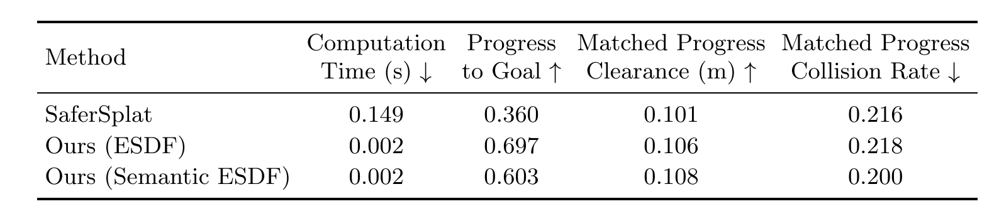
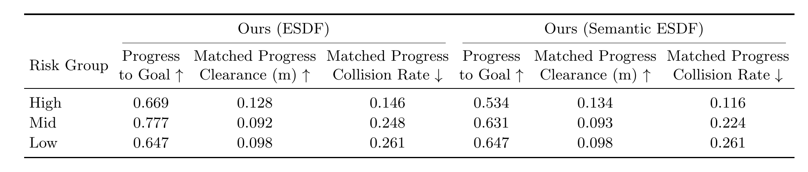
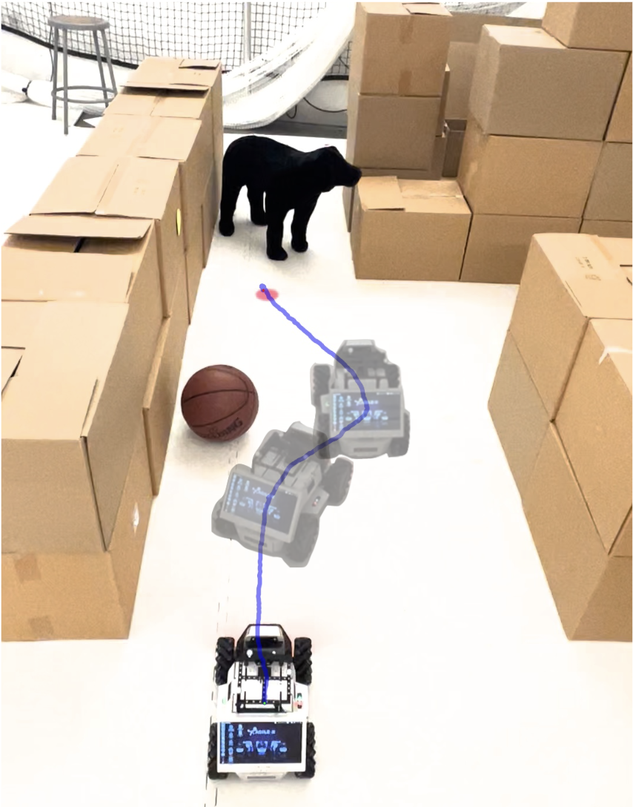
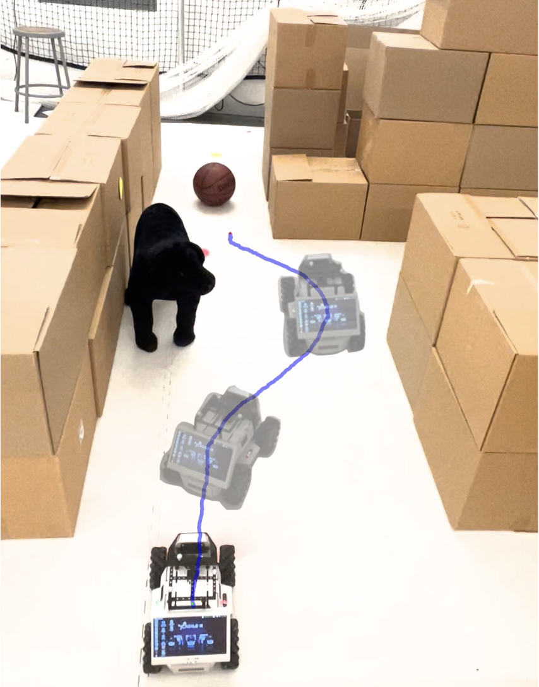

Abstract
We propose an online monocular perception-to-control framework that embeds semantic risk into the distance field used by Control Barrier Function (CBF)-based safe navigation and teleoperation. Many perception-based safety filters assign the same distance-based safety margin to all mapped obstacles or use semantics only as a downstream controller adjustment, rather than encoding semantic risk in the spatial representation. Our framework instead reasons online about obstacle geometry and class-dependent risk by embedding semantic information directly into the Euclidean Signed Distance Field (ESDF). This design encodes semantic risk before control optimization, so high-risk objects exert a larger spatial influence in the safety field while retaining efficient ESDF queries at runtime. Specifically, a foundation-model-based SLAM front end reconstructs dense 3-D geometry from monocular RGB video, while per-frame semantic segmentation provides pixel-level class labels that are fused into the reconstructed geometry. The resulting geometric-semantic representation is then converted into an ESDF, where semantic labels identify safety-relevant regions and impose class-dependent inflation before field computation. The semantic-aware ESDF provides the local distance values and spatial derivatives required by the CBF controller, while class-dependent gains further regulate the controller response. Extensive simulation and hardware experiments demonstrate online operation at 10--20 Hz and semantic-aware safe behavior in both teleoperation and autonomous navigation.
Methodology

Simulation Results


Real-Robot Experiments
We validate the proposed framework in both teleoperation and autonomous navigation scenarios to demonstrate its effectiveness for semantic-aware safe control in an online setting.
Navigation in a loop
Navigation with unknown obstacle
Teleoperation with a Ball
Teleoperation with a Dog


Teleoperated robot trajectories under different obstacle semantics. (a) Low-risk obstacle (ball), where the robot allows closer interaction with minimal intervention. (b) High-risk obstacle (dog), where the safety filter activates earlier and maintains a larger clearance.
BibTeX
@misc{zhang2026embeddingsemanticriskdistance,
title={Embedding Semantic Risk into Distance Fields and CBFs for Online Monocular Safe Control},
author={Dawei Zhang and Nuo Chen and Shuo Liu and Roberto Tron and Zhiwen Fan},
year={2026},
eprint={2606.01605},
archivePrefix={arXiv},
primaryClass={cs.RO},
url={https://arxiv.org/abs/2606.01605},
}